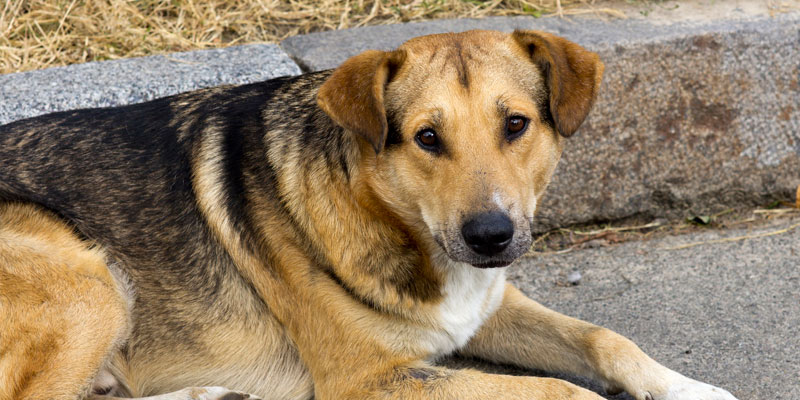
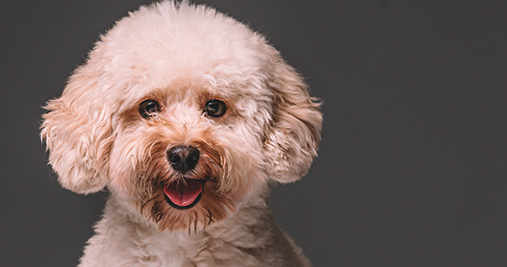
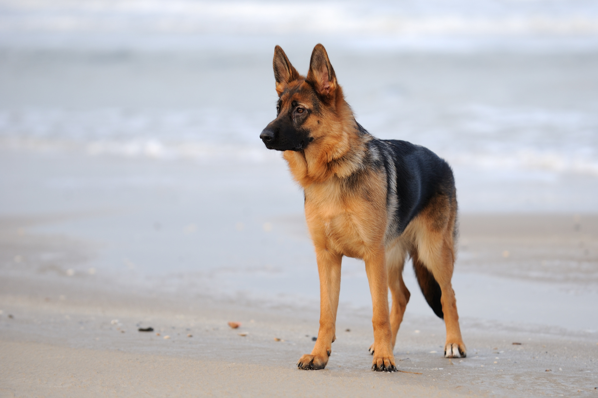
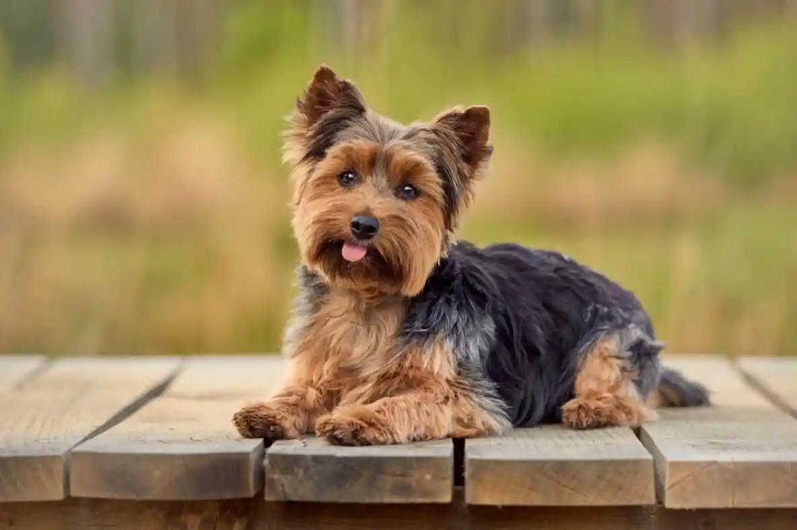
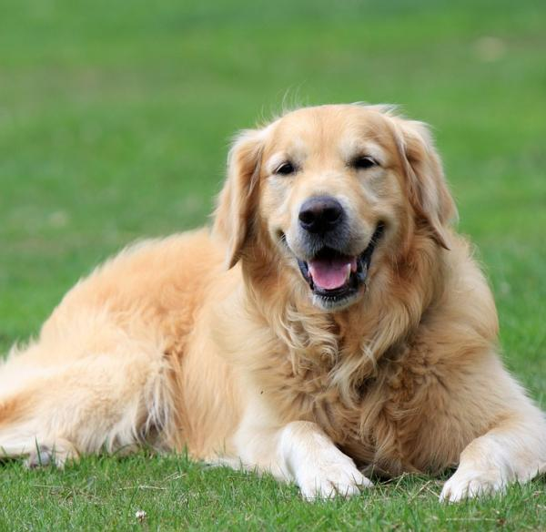

Las 5 Razas de Perros más comunes en Chile
Conocer previamente las razas de perros más comunes, sus personalidades, tamaños y tipo de pelajes, te permitirá determinar cuál elegir, pues todos estos factores influirán en el tipo de cuidado de cachorros perros que deberá recibir:
1. Quiltros: El primer lugar, con más 600.000 registros en el organismo oficial hasta la fecha, lo ocupan los perros mestizos sin pedigrí, conocidos comúnmente como Quiltros. Son considerados un patrimonio del país y una fuente de inspiración para famosas tiras cómicas, películas y libros (como el fox terrier chileno de Condorito). Tienen una personalidad adorable y se caracterizan por ser sumamente inteligentes y agradecidos con sus dueños.

2. Poodle: Estos perros peludos se caracterizan principalmente por su tamaño pequeño y su apariencia de peluche. Miden entre 25 y 38 centímetros, y pesa entre 4 y 31 kilogramos. Son perritos fáciles de entrenar y tienden a ser muy enérgicos durante todo el día. También tiene una buena capacidad de adaptación y requiere de cuidados regulares para evitar que su pelaje se enrede y luzca descuidado.

3. Pastor Alemán: Es una raza de tamaño grande, que puede medir entre 60 cm (hembra) y unos 66 cm (macho). Se caracteriza por ser un perro fiel que demuestra su lealtad desde muy cachorrito. Es muy ágil y responde muy bien al entrenamiento que se le brinde. Se encuentra entre las razas de perro en Chile con mayor número de registros después de los Quiltros y Poodles.

4. Yorkshire Terrier: Si prefieres perros peludos y pequeños que llame la atención por su hermoso pelaje largo y fino, el Yorkshire Terrier es perfecto para ti. Se encuentran entre las razas de perros más pequeñas en Chile, pues miden de 15 a 17 centímetros. Tienden a ser bastante sensibles al frío y en algunos casos algo nerviosos ante los ruidos fuertes.

5. Golden Retriever: Se trata de una raza de perros grandes con una noble y cariñosa personalidad. Son muy amigables con toda la familia y tienden a llevarse muy bien con otras mascotas, tienen un pelaje claro y medianamente largo y tienden a ser muy versátiles y juguetones. El cuidado de cachorros perros se requiere independientemente a su raza. Algunos necesitan un cuidado más delicado y constante que otros, pero todos ellos necesitarán de tu atención y de una visita programada con un veterinario de confianza. Rocketpin te hace esta tarea y responsabilidad mucho más sencilla y práctica con sus servicios y cuidados veterinarios a domicilio. Conoce todos los servicios que Rocketpin ofrece y deja a tu mascota en manos de expertos.
